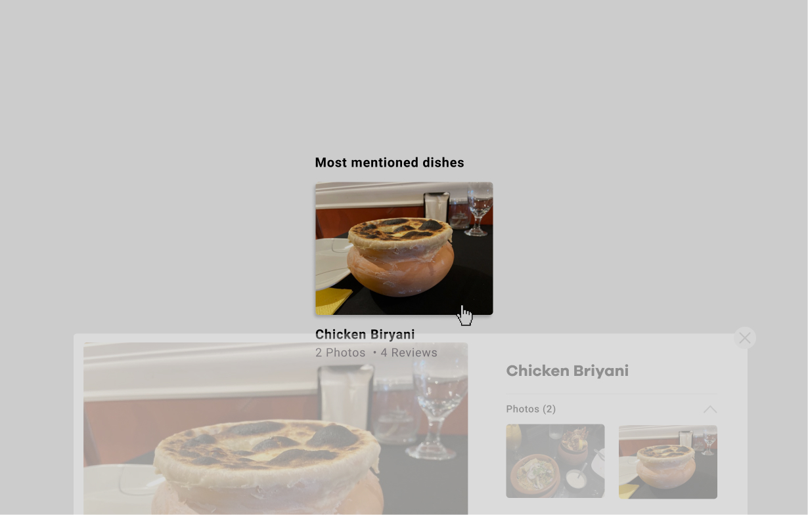
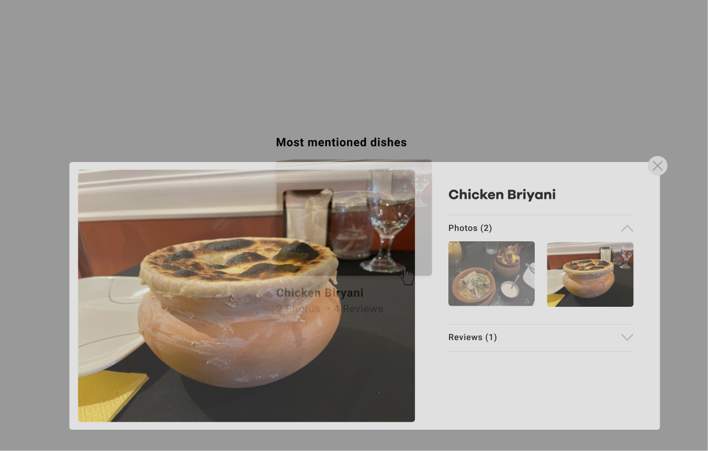
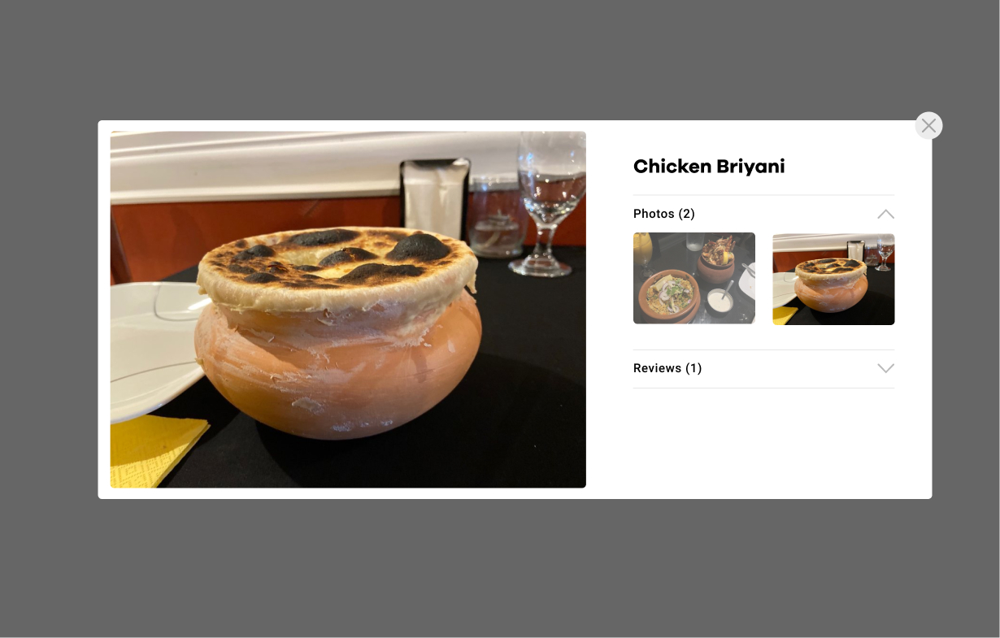
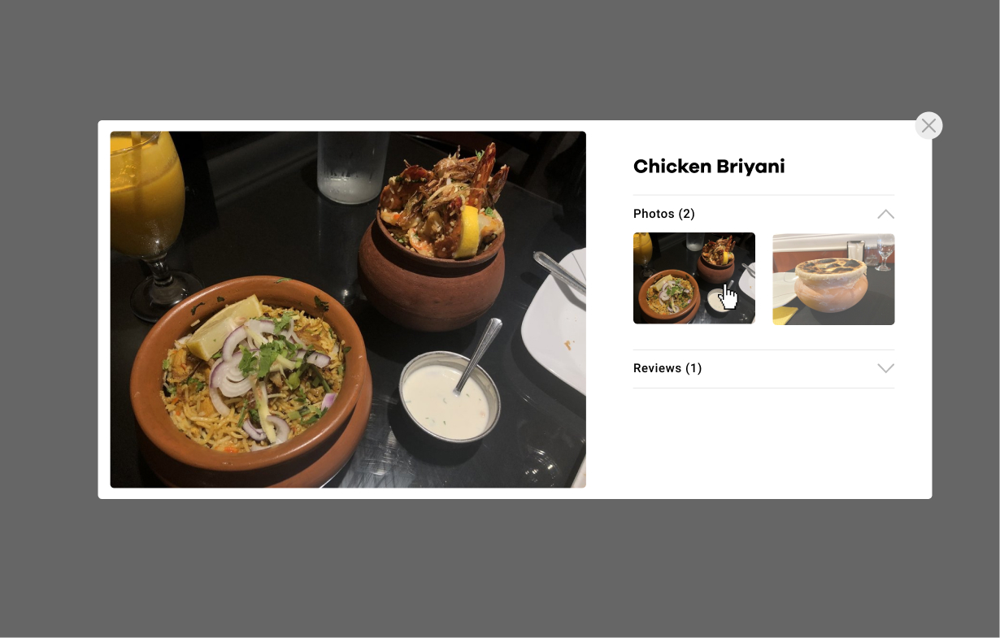
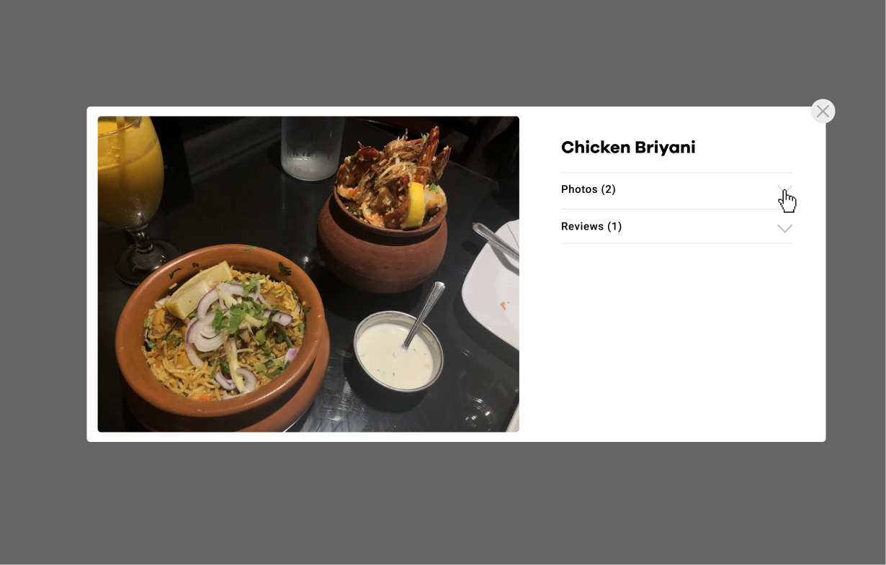
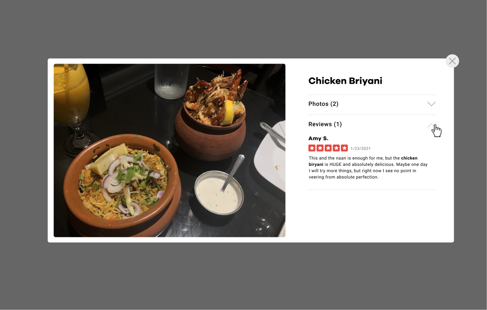

IDM 241 - Final Build
Yelp Microinteraction -
Link
Trigger:
- Hover over & click on photo
- Hover over & click on X in modal
- Hover over & click on small photos inside modal
- Hover over & click on arrows inside modal
Rules:
- Cursor changes to pointer when hovering over image
- On hover the photo expands, a drop shadow appears, and a new photo fades in on top of current photo after 2 seconds
- Photo goes back to original size when hovered off photo
- Drop shadow disappears when hovered off photo
- Remain on same photo the slideshow was on when hovered off photo
- When the photo is clicked on, a modal pops up with a larger image of a photo from the slideshow on the lefthand side and with more photos and reviews on the righthand side
- The modal slides up and fades in from the bottom and a black background with a low opacity fades in behind the modal
- When user hovers over the X on the modal, the cursor changes to pointer and the X hover state lowers in opacity
- When the user hovers over the smaller photo in the modal that is not the large photo on the left, the cursor changes to a pointer, it increases to 100% opacity and lowers in opacity when hovered off. When it is clicked on, it changes the large photo to the same image. The opacity stays at 100%, and the other small photo decreases in opacity.
- When the user hovers over the up and down arrows in the modal, the cursor changes to a pointer, they decrease in opacity and go back to 100% opacity when hovered off. When the arrow is clicked on when it is facing down, it flips upwards and the content gets hidden. If it is clicked on when it is facing up, it flips downwards and the content is shown below.
- When x is clicked on the modal, the background fades out back to 0% opacity and the modal slides off and fades out of the screen towards the bottom
Feedback:
Loop & Modes:
- Slideshow repeats until user is no longer hovering over the photo
- When the user clicks on the image, a modal comes up on the screen and when the user hovers over the X it changes to a lower opacity to indicate the user can click on it to close the modal.






